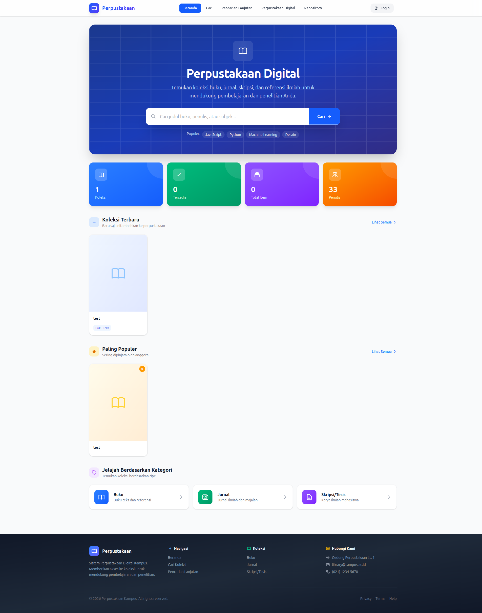
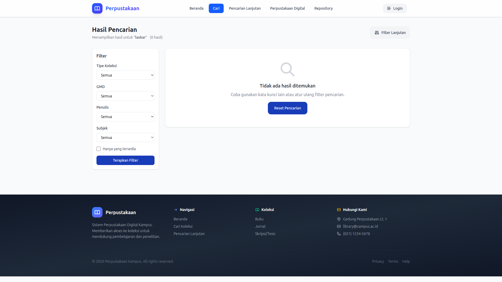
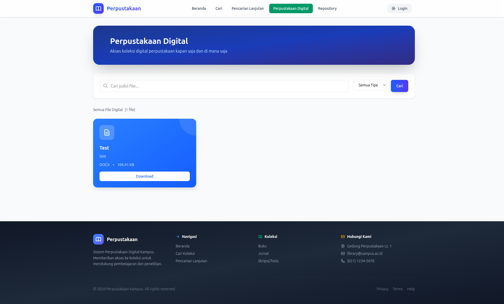
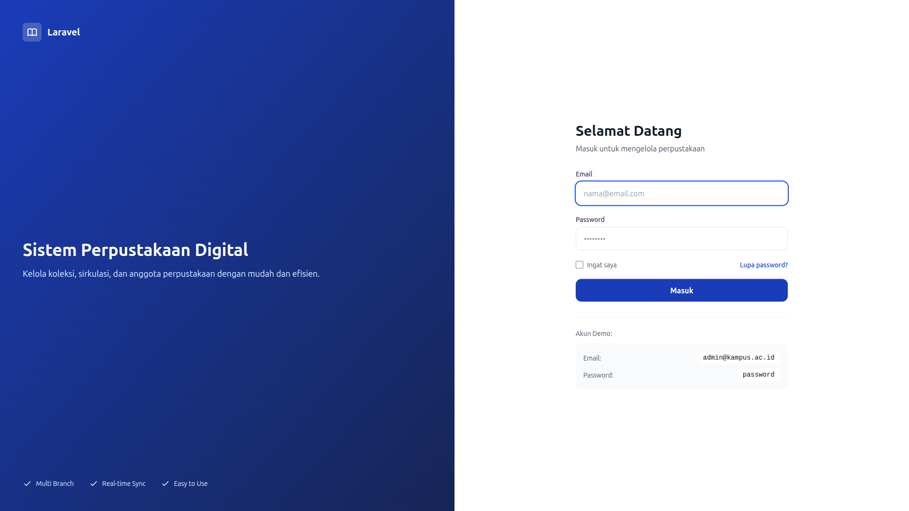
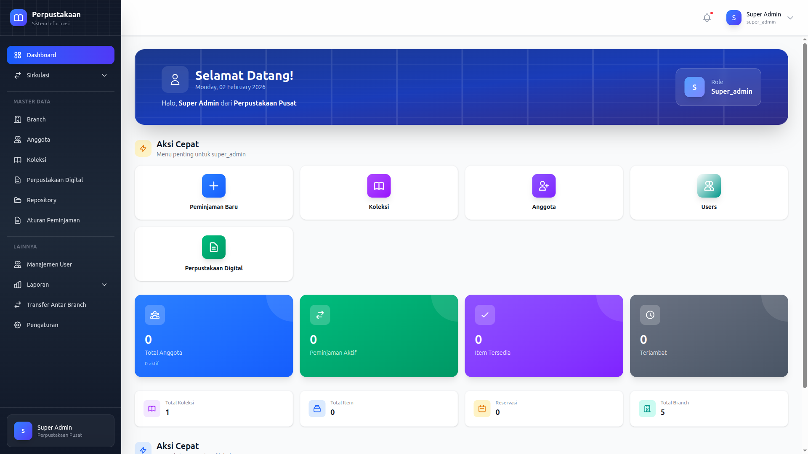
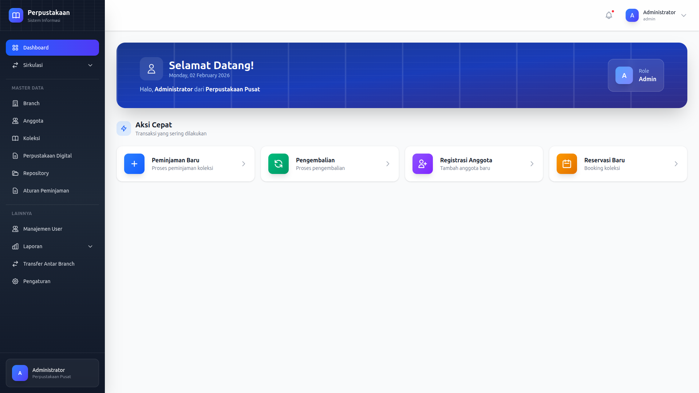
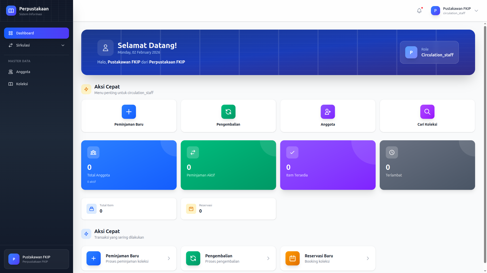
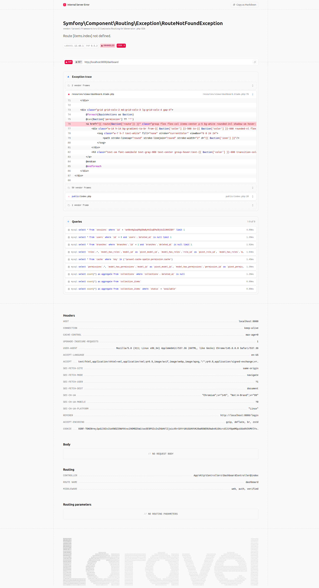
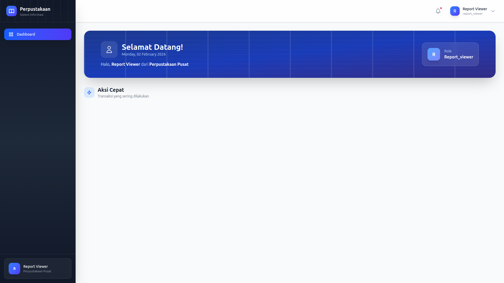

Gambar: Halaman repository karya ilmiah
Dokumentasi Penggunaan Lengkap dengan Screenshot
Versi 1.0 | 2 Februari 2026
Aplikasi Perpustakaan Digital adalah sistem manajemen perpustakaan terintegrasi dengan berbagai fitur untuk memudahkan pengelolaan dan akses koleksi perpustakaan.
Pencarian buku real-time
Peminjaman & pengembalian
E-book & jurnal online
Statistik & analisis


OPAC (Online Public Access Catalog) memungkinkan Anda mencari koleksi buku tanpa perlu login.

Perpustakaan Digital menyediakan akses ke e-book, jurnal, skripsi, dan tesis.
Repository menyimpan karya ilmiah mahasiswa, dosen, dan staf institusi.

| Role | Permissions | Deskripsi |
|---|---|---|
| super_admin | 77 | Full akses ke seluruh sistem |
| admin | 77 | Full akses sama seperti super_admin |
| branch_admin | 39 | Admin cabang - kelola anggota, sirkulasi |
| circulation_staff | 13 | Staff sirkulasi - peminjaman & pengembalian |
| catalog_staff | 19 | Staff katalog - kelola koleksi & katalog |
| report_viewer | 6 | Viewer laporan - hanya melihat laporan |
super_admin - Administrator tertinggi dengan akses penuh.

admin - Administrator dengan akses penuh.

Admin memiliki akses yang sama dengan Super Admin.
branch_admin - Administrator cabang dengan 39 permissions.
circulation_staff - Staff sirkulasi dengan 13 permissions.

catalog_staff - Staff katalog dengan 19 permissions.

report_viewer - Viewer laporan dengan 6 permissions.

Dokumentasi ini berdasarkan aplikasi perpustakaan digital dengan 7 role berbeda.
Update: 2 Februari 2026 | Versi: 1.0
© 2026 Perpustakaan Tazkia. All rights reserved.